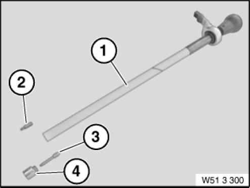

51 3 300 Adjuster
51 3 300 Adjuster
0495590
Minimum set: Mechanical tools
MW

NOTE: (Special tool for door window glass adjustment) For adjusting door window glass in "Y" direction
Storage Location: A18
B18
C18
SI number: 01 10 07 (361)
Consisting of:
1 = 0495624 Handle
NOTE: (Shank)
2 = 0495625 Torx
NOTE: (Torx bit (15))
3 = 0496201 Torx
NOTE: (Torx bit, long)
4 = 0496202 Socket WAF 46
NOTE: (Socket SW13 (adapter))